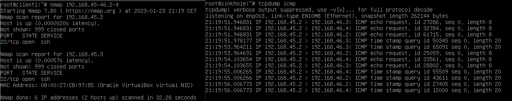

Démonstration
Lorsqu’un attaquant va avoir accès à une machine au sein d’un réseau (d’entreprise par exemple), il voudra tenter de faire des mouvements latéraux (c’est à dire découvrir de nouveau réseaux) afin de trouver de potentielles machines sensibles et potentiellement intéressantes pour lui.
Un outil très connu pour faire cela est nmap. Nous allons prendre cet outil comme exemple afin de voir si notre Sinkhole fonctionne bien. Nous allons faire en sorte de scanner les machines ayant les adresses IP 192.168.45-46.2-4. Notre Sinkhole devrait recevoir les requêtes à destination des machines ayant des adresses IP comprises entre 192.168.46.2 et 192.168.46.4.
Voici ce que nous obtenons :

Nous voyons bien (en zoomant) à droite que notre sinkhole a reçu les requêtes étant à destination des adresses IP privées n’appartenant pas au réseau 192.168.45.0/24.